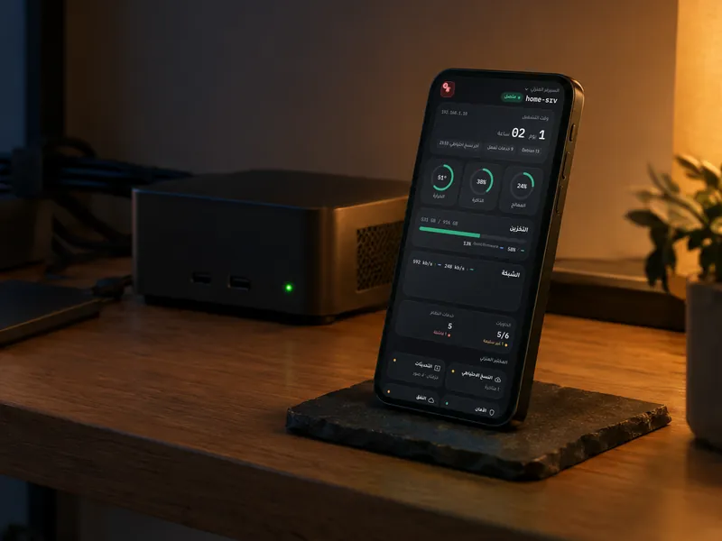
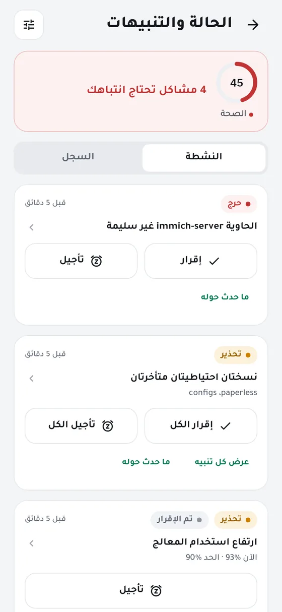
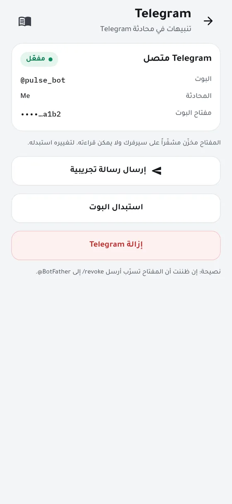
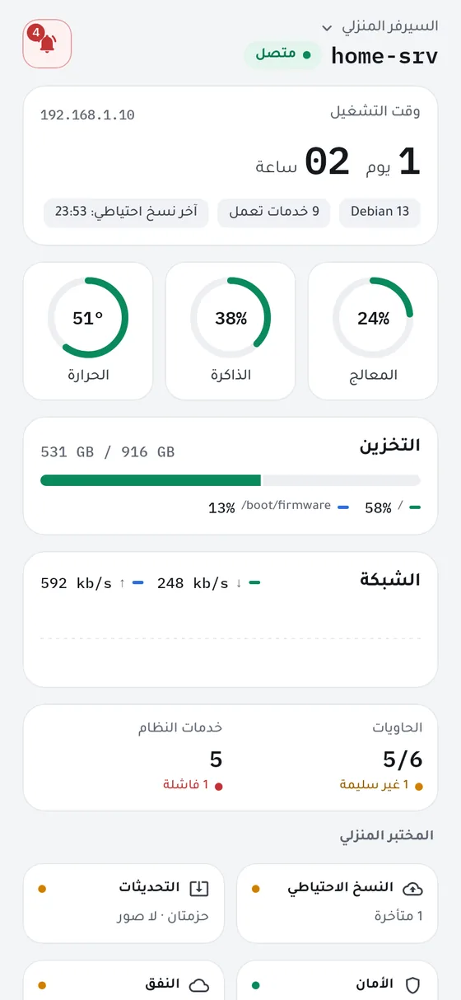
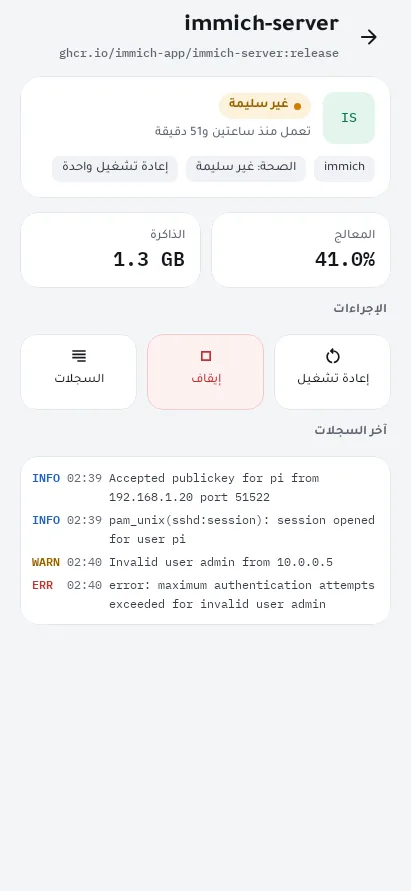

لأندرويد · الإصدار الأول قريباً على Google Play
سيرفرك يسهر طوال الليل، فلا تسهر معه.
Homelab Pulse تطبيق أندرويد ووكيل صغير تثبّته على سيرفرك المنزلي. يراقب الوكيل السيرفر ليلاً ونهاراً، ولا يوقظ هاتفك إلا حين يحتاجك أمر فعلاً. والتطبيق يريك كل شيء، ويتيح لك التصرّف من أي مكان دون أن تفتح منفذاً واحداً.
مفتوح المصدر · بالعربية والإنجليزية · أندرويد 8.0 فما فوق

- 1 أمر واحد يثبّت الوكيل
- 0 منفذ تفتحه في الراوتر
- 0 حسابات أو إعلانات أو تتبّع
- 30يوماً من الرسوم البيانية، محفوظة على سيرفرك أنت
- 27.7MB ذاكرة الوكيل على Raspberry Pi 5، وسيطاً على مدى 72 ساعة، ومساعده root يأخذ 16.3MB أخرى
01 ليلة مع سيرفرك
ما جرى وأنت نائم، سطراً بسطر.
ليلة واحدة على سيرفر منزلي، نرويها بشاشات التطبيق نفسه.
-
CRIT
الحاوية immich-server غير سليمة
هاتفك نائم، والسيرفر صاحٍ.
يفحص الوكيل قواعد التنبيه على السيرفر نفسه، فلا شيء ينتظر أن يستيقظ هاتفك. ويصله التنبيه إشعاراً لا يقرؤه غيره: مشفّراً من طرف إلى طرف، بمفتاح أُنشئ يوم الاقتران.

-
CRIT
لم يُقَرّ خلال 5 دقائق: أُرسل إلى Telegram
لم يردّ أحد، فالدور على Telegram.
التنبيه الحرج الذي لا يُقرّ به أحد خلال خمس دقائق يذهب إلى Telegram أيضاً، عبر بوت تنشئه وتملكه. يرسله سيرفرك إلى Telegram مباشرة، فيصل حتى إلى هاتف بلا خدمات Google.

-
INFO
home-srv يعمل منذ يوم وساعتين · الحاويات السليمة 5 من 6
نظرة واحدة مع قهوة الصباح.
مدة التشغيل والمعالج والذاكرة والحرارة والتخزين والشبكة، ثم الحاويات والخدمات والنسخ الاحتياطي والتحديثات، في شاشة واحدة. وللمعالج والذاكرة والحرارة والتخزين والشبكة تاريخها على سيرفرك، حتى 30 يوماً إلى الوراء.

-
OK
أُعيد تشغيل immich-server · عبر Cloudflare · في سجل التدقيق
أصلحته من المكتب، ولم تفتح شيئاً في البيت.
خارج البيت يصل التطبيق إلى سيرفرك عبر Cloudflare Tunnel، خلف Cloudflare Access، وينتقل بين البيت وخارجه من تلقاء نفسه. وإعادة التشغيل تطلب بصمتك أو قفل الشاشة أولاً، ثم يكتبها السيرفر في سجل التدقيق.

02 ما يراقبه
وكيل صغير واحد، ومختبرك المنزلي كله.
- الصحة
- المعالج وكل نواة فيه، والذاكرة، والحرارة، والتخزين مع صحة الأقراص، والشبكة، حيّةً كل ثانيتين. والتاريخ يبقى على سيرفرك: حتى 30 يوماً من الرسوم البيانية في التطبيق.
- الحاويات والخدمات
- حاويات Docker وخدمات systemd بحالتها وصحتها ومعالجها وذاكرتها. شغّلها وأوقفها وأعد تشغيلها، واقرأ سجلاتها حيّةً مصفّاة حسب المستوى.
- التنبيهات
- سبع عشرة قاعدة مدمجة، ست عشرة منها مفعّلة من البداية، وفحوص HTTP وTCP تضيفها بنفسك، وكلها تُفحص على السيرفر. وتصلك إشعاراً مشفّراً، أو على Telegram، أو بهما معاً.
- الطرفية
- طرفية حقيقية على سيرفرك، يعمل فيها htop وvim، وتظهر فيها العربية كما ينبغي. وإن انقطع الاتصال انتظرتك الجلسة حتى 30 دقيقة.
- المختبر المنزلي
- حداثة النسخ الاحتياطي (النسخة الأقدم من 26 ساعة تُعدّ فاشلة افتراضياً)، والتحديثات المعلّقة، وfail2ban وUFW، ومراقبات Uptime Kuma بجانب حالة سيرفرك نفسه.
- العائلة والفريق
- ما شئت من السيرفرات. ادعُ هاتفاً آخر برمز لمرة واحدة ودور تختاره، وأنهِ وصوله فوراً، واطّلع في سجل التدقيق على كل تغيير أجراه.
03 كيف يعمل
وكيل صغير وهاتفك، ولا حساب لدينا.
الوكيل برنامج واحد على سيرفرك: يحفظ التاريخ، ويفحص القواعد، ويرسل التنبيهات. ويكلّمه هاتفك مباشرة في البيت، وعبر Cloudflare حين تكون خارجه.
- في البيت مباشرة إلى الوكيل عبر TLS على المنفذ 8443 افتراضياً. ولا يثق التطبيق إلا بالشهادة التي في رمز QR الذي مسحته.
- خارج البيت عبر Cloudflare Tunnel الذي يفتحه سيرفرك نحو الخارج، خلف Cloudflare Access. وترى Cloudflare هذه الحركة عند حافتها، كما تذكر سياسة الخصوصية.
- التنبيهات تُشفَّر على السيرفر لهاتفك، ثم يمرّرها Pulse Relay إلى Firebase Cloud Messaging، ولا يقرؤها أيّ منهما. أو يرسلها بوت Telegram الخاص بك.
التثبيت
curl -fsSL https://github.com/Aldaghir/homelab-pulse/releases/latest/download/install.sh | sudo sh
يطبع الأمر رمز QR، امسحه في التطبيق فيقترن هاتفك بسيرفرك. ودليل التثبيت يريك كل شاشة.
يعمل هذا الأمر مع أول إصدار عام قريباً. أعلمني عند الإطلاق
تحتاج إلى
- سيرفر
- Debian أو Ubuntu أو Raspberry Pi OS، بنظام 64 بت (arm64 أو amd64)، مع systemd
- Docker
- اختياري تعمل ميزات الحاويات حين يوجد Docker
- هاتف
- أندرويد 8.0 فما فوق
- خارج البيت
- اختياري نطاق في حسابك على Cloudflare، والخطة المجانية تكفي
- بلا Google
- اختياري بوت Telegram تنشئه بنفسك، للتنبيهات
04 الأمان
ما يُبقي سيرفرك لك.
التطبيق يعيد تشغيل الخدمات ويفتح طرفية على سيرفرك، فكل خطوة فيه محروسة.
- SHA-256
شهادة مثبّتة
يحمل رمز QR بصمة شهادة الوكيل. في شبكة منزلك لا يثق التطبيق إلا بتلك الشهادة، ويرفض الاتصال إن تغيّرت.
- 256-bit
توكن لكل هاتف
لكل هاتف توكن خاص به، لا يحفظ الوكيل منه إلا بصمته. ورمز الاقتران يعمل مرة واحدة، خلال عشر دقائق.
- viewer · operator · admin
دور لكل هاتف
اختر ما يُسمح لكل هاتف به. وإنهاء وصول هاتف يقطع بياناته الحية وطرفيته فوراً.
- Android Keystore
بصمتك للإجراءات الخطرة
الطرفية، والإيقاف وإعادة التشغيل، وإعادة تشغيل السيرفر، والقواعد، والتكاملات، والدعوات، والوصول عن بُعد: كلها تحتاج توقيعاً جديداً بمفتاح في Keystore هاتفك، تفتحه بصمتك أو قفل الشاشة. ومن دونه يرفض السيرفر.
- AES-256-GCM
مفاتيح لا يقرؤها أحد
مفاتيح Telegram وCloudflare وUptime Kuma محفوظة مشفّرة على سيرفرك. يستطيع التطبيق استبدالها لا قراءتها، ولا يظهر أيّ منها في سجل.
- no sudo
أقل ما يلزم من صلاحيات
يعمل الوكيل بلا sudo. ومساعد صغير ينفّذ الأوامر القليلة التي تحتاج root، وبالصيغ الثابتة التي يسمح بها إعداده فقط.
05 المجاني وPro
مجاني للتشغيل، وPro لمن يريد المزيد.
0في كل النسخ
كل ما سبق
على ما شئت من السيرفرات، في النسخة التي من GitHub والنسخة التي من Google Play. بلا فترة تجربة، ولا حدود، ولا حساب.
4.99دولاراً، مرة واحدة، في نسخة Google Play
Pro
- متصفح الملفات الكاملمتاح
- ودجات متقدمةقادمة
- ثيمات إضافيةقادمة
- ملخص أسبوعيقادم
الأسعار، وما يضيفه Pro، وكيف يتم شراؤه
Homelab Pulse برنامج حرّ. وإن وفّر عليك ليلة، فادعم العمل عليه عبر GitHub Sponsors أو Ko-fi.
06 المصدر المفتوح
اقرأ الكود الذي يعمل على سيرفرك.
نواة التطبيق بترخيص GPL-3.0، والوكيل وواجهته البرمجية ومرحّل الإشعارات بترخيص Apache-2.0. ولا يُغلق منه إلا Pro في نسخة Google Play.
يُفتح المستودع مع أول إصدار عام. أعلمني عند الإطلاق